LakeInsight服务实例部署文档
概述
LakeInsight 是开放式多模态湖仓数据智能平台，支持流、批、MPP、AI 等多种计算模式，覆盖从多源异构数据汇聚、流批一体处理分析到多模态 AI 应用的全链路场景。平台采用云原生容器化和存算分离架构，无缝对接 BI 报表与 AI 训练，在云上获得极致的弹性和性价比。
-
AI Native：基于 VSCode 的 AI Native 一站式数据智能开发环境，提供编码、调试、部署的一体化体验。
-
Agentic AI：辅助生成代码、工作流编排、错误排查，内置开箱即用的 MCP 和 Skills，让数据智能开发像对话一样简单。
-
结构化、非结构化数据统一存储：构建多模态模型或向量检索应用，支持结构化数据、文本、图片、音视频等多种数据类型的统一接入、混合存储与分析处理。无需切换工具，即可完成数据清洗、特征提取与模型训练，让复杂数据像模块化积木一样自由组合。
-
数据自动化集成、流批任务开发和管理：提供从数据接入、开发治理到数据服务和 BI 的一站式湖仓数据智能平台，支持多源及湖仓数据的交互式分析，并可自动化创建数据采集与导出任务。平台提供任务运行监控与日志解析能力，结合自然语言生成 SQL，实现从分析到发布、审批与上线的全流程闭环，提升数据处理与应用效率。
更多产品功能介绍与使用指南，请参见 LakeInsight 产品文档。
计费说明
LakeInsight 支持以下两种部署模式，费用构成有所不同：
- 已有 ACK 集群：将服务直接部署到已有集群，仅需支付软件费用。
- 新建 ACK 集群：需先创建集群再部署服务，需支付 ACK 资源费用和软件费用。
LakeInsight 在计算巢上的费用主要涉及：
- 所选 vCPU 与内存规格
- 磁盘容量
- 公网带宽
- ACK 集群费用（仅新建集群模式）
- 软件费用
计费方式为按量付费（小时），主要为云资源费用，计算方式如下：
CRU 定义
CRU (Compute Resource Unit) = max(CPU 核数, 内存 GiB / 4)
1 CRU 以 1 vCPU + 4 GiB 内存为基准；实际取值按公式取较高者——CPU 密集型场景取 CPU 核数，内存密集型场景取内存 GiB / 4。
资源计量
- CPU：
rate(container_cpu_usage_seconds_total[5m])→ 1h 平均 → cores - 内存：
container_memory_working_set_bytes→ 1h 平均 → GiB - CRU：max(CPU_cores, Memory_GiB / 4)
- 运行分钟：基于 Pod 生命周期（Running）统计该小时内
runtime_minutes - 有效 CRU：
effective_cru = cru × runtime_minutes / 60
计费公式
小时费用 = effective_cru × 基础单价 × 作业类型系数
示例： - Pod 平均用量：2 CPU + 6 GiB 内存 - CRU = max(2, 6/4) = max(2, 1.5) = 2 - 基础单价：0.5 元/CRU/小时 - 作业类型：streaming（系数 1.2） - 若该小时运行 30 分钟：effective_cru = 2 × 30/60 = 1 - 小时费用 = 1 × 0.5 × 1.2 = 0.6 元
预估费用在创建实例时可实时看到。
部署架构
LakeInsight 采用云原生容器化架构，部署在阿里云 ACK（容器服务 Kubernetes 版）集群上，核心组件如下：
| 组件 | 说明 |
|---|---|
| LakeInsight 服务 | 核心湖仓数据智能平台，包含 Web 控制台、任务调度与查询引擎 |
| PostgreSQL | 元数据存储，支持使用内置高可用集群（CloudNative-PG，2-3 副本）或外接已有 PostgreSQL |
| 对象存储 | 湖仓数据持久化存储，支持使用内置存储卷或外接 S3 兼容对象存储 |
| MSE Ingress | 通过阿里云微服务引擎（MSE）提供公网/内网访问入口，支持自定义域名与 HTTPS |
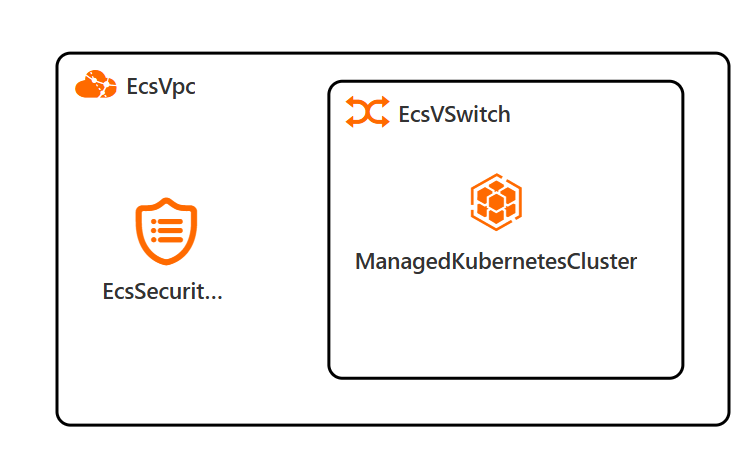
RAM 账号所需权限
若您使用 RAM 用户创建服务实例，需提前为该账号添加以下资源访问权限。添加权限的详细操作，请参见 为 RAM 用户授权。
| 权限策略名称 | 用途 | 备注 |
|---|---|---|
| AliyunECSFullAccess | 创建和管理 ACK 所需的 ECS 云服务器实例 | 管理云服务器服务（ECS）的权限 |
| AliyunVPCFullAccess | 创建和管理 VPC 专有网络及交换机 | 管理专有网络（VPC）的权限 |
| AliyunROSFullAccess | 通过资源编排服务自动创建云资源栈 | 管理资源编排服务（ROS）的权限 |
| AliyunComputeNestUserFullAccess | 使用计算巢创建和管理服务实例 | 管理计算巢服务（ComputeNest）的用户侧权限 |
| AliyunCloudMonitorFullAccess | 监控集群节点和服务运行状态 | 管理云监控（CloudMonitor）的权限 |
| AliyunCSFullAccess | 创建和管理 ACK（容器服务 Kubernetes 版）集群 | 管理容器服务（CS）的权限 |
| AliyunTagAdministratorAccess | 为实例资源打标签，便于分账和管理 | 管理标签服务（TAG）和所有阿里云产品标签的权限 |
| AliyunMSEFullAccess | 通过 MSE Ingress 提供公网/内网访问入口 | 管理微服务引擎（MSE）的权限 |
部署流程
部署步骤
- 单击部署链接，进入服务实例部署界面。您可以在阿里云计算巢自行搜索 LakeInsight，进行订阅。
- 根据界面提示，填写参数完成部署。
部署参数说明
创建服务实例时，需根据实际情况配置以下参数。参数分为三种场景：已有 ACK 集群、新建 ACK 集群，以及应用级别配置（含外部存储选择）。
已有 ACK 集群
选择"否"（不新建 ACK 集群）时，需提供已有集群信息：
| 参数组 | 参数项 | 示例 | 说明 |
|---|---|---|---|
| 基础信息 | 服务实例名称 | test | 实例的名称 |
| 基础信息 | 地域 | 华东1（杭州） | 选中服务实例的地域，建议就近选中，以获取更好的网络延时。 |
| 集群配置 | 是否新建 ACK 集群 | 否 | 选择否代表已有 ACK 集群，不用新建 |
| 集群配置 | K8s 集群 ID | ccde6dxxxxxxxxxxxx1230d | 根据地域选择用户已有的集群 ID |
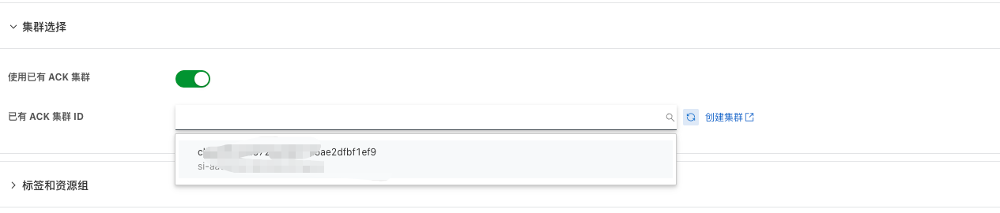
新建 ACK 集群
选择"是"（新建 ACK 集群）时，需配置以下基础资源和 Kubernetes 参数：
| 参数组 | 参数项 | 示例 | 说明 |
|---|---|---|---|
| 基础信息 | 服务实例名称 | test | 实例的名称 |
| 基础信息 | 地域 | 华东1（杭州） | 选中服务实例的地域，建议就近选中，以获取更好的网络延时。 |
| 集群配置 | 是否新建 ACK 集群 | 是 | 选择是代表新建 ACK 集群 |
| 基础配置 | 可用区 | 可用区I | 地域下的不同可用区域 |
| 基础配置 | 专有网络 IPv4 网段 | 192.168.0.0/16 | VPC 的 IP 地址段范围 |
| 基础配置 | 交换机子网网段 | 192.168.1.0/24 | 必须属于 VPC 的子网段 |
| 基础配置 | 实例密码 | ** | 设置实例密码。长度8~30个字符，必须包含三项（大写字母、小写字母、数字、()~!@#$%^&*-+={}[]:;'<>,.?/ 中的特殊符号） |
| Kubernetes 配置 | Worker 节点规格 | ecs.g6.large | 选择对应 CPU 核数和内存大小的 ECS 实例，用作 Kubernetes 节点 |
| Kubernetes 配置 | Worker 系统盘磁盘类型 | ESSD云盘 | 选择集群 Worker 节点使用的系统盘磁盘类型 |
| Kubernetes 配置 | Worker 节点系统盘大小(GB) | 120 | 设置 Worker 节点系统盘大小，单位为 GB |
| Kubernetes 配置 | Service CIDR | 172.16.0.0/16 | ACK Service 网络段，可选范围：10.0.0.0/16-24，172.16-31.0.0/16-24，192.168.0.0/16-24，不能与 VPC 及 VPC 内已有 Kubernetes 集群使用的网段重复。 |
| Kubernetes 配置 | Pod 网络 CIDR | 10.0.0.0/8 | ACK Pod 网络段，网络插件为 Flannel 时必填。请填写有效的私有网段，即以下网段及其子网：10.0.0.0/8，172.16-31.0.0/12-16，192.168.0.0/16，不能与 VPC 及 VPC 内已有 Kubernetes 集群使用的网段重复。 |
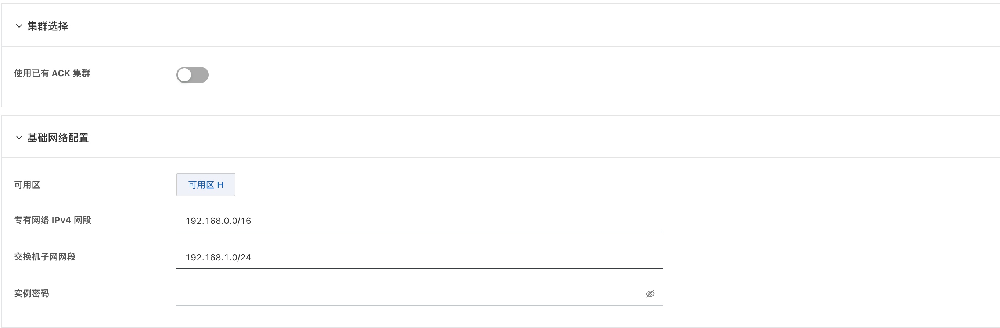
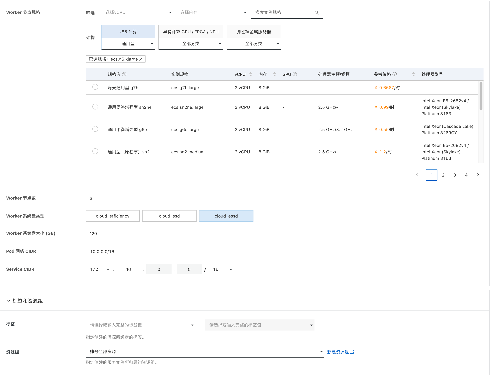
应用配置
应用级别参数，包含 LakeInsight 管理员账号、网络访问、外部存储及调度组件等配置：
| 参数项 | 示例 | 说明 |
|---|---|---|
| LakeInsight 管理员密码 | 123456 | 自定义首次打开LakeInsight界面的登录密码 |
| LakeInsight 管理员用户 | lakeadmin | 自定义管理员用户名，默认为 lakeadmin |
| 访问域名 | 否 | 自定义访问域名。留空则自动获取阿里云 MSE Ingress 域名，可用于测试，每天有 1000 次访问限制，请勿直接用于生产环境。 |
| 启用 HTTPS | 是 | 是否启用 HTTPS 访问，启用后需配置 TLS 证书和私钥 |
| TLS 证书（PEM 格式） | 否 | TLS 证书内容（PEM 格式），启用 HTTPS 时必填 |
| TLS 私钥（PEM 格式） | 否 | TLS 私钥内容（PEM 格式），启用 HTTPS 时必填 |
| 使用外部对象存储 | 是 | 选择是代表使用已有的外部对象存储服务，需配置下方对象存储相关参数。选择否将使用内置存储 |
| 对象存储 Endpoint | 外部对象存储服务的访问端点 | |
| 对象存储 AccessKey | 外部对象存储服务的 AccessKey | |
| 对象存储 SecretKey | 外部对象存储服务的 SecretKey | |
| 对象存储 Bucket | 外部对象存储的 Bucket 名称 | |
| 对象存储 Region | 外部对象存储服务的 Region | |
| 使用外部 PostgreSQL | 是 | 选择是代表使用已有的外部 PostgreSQL 服务，需填写下方 PostgreSQL 连接参数。选择否，系统将自动部署一个高可用 PostgreSQL 集群（14.15 版本，规格详见下方说明） |
| PostgreSQL 服务地址 | 外部 PostgreSQL 服务的连接地址 | |
| PostgreSQL 端口 | 外部 PostgreSQL 服务的端口号 | |
| PostgreSQL 用户名 | 外部 PostgreSQL 服务的用户名 | |
| PostgreSQL 密码 | 外部 PostgreSQL 服务的密码 | |
| 是否启用数据查询服务 | 是否启用数据查询相关功能（需先启用 HTTPS） | |
| PostgreSQL 规模 | medium | 内置 PostgreSQL 集群的资源规格：medium（2 副本 / 2 CPU / 4 Gi 内存 / 50 Gi 存储）、large（3 副本 / 2 CPU / 8 Gi 内存 / 100 Gi 存储），详见下方规格表。 |
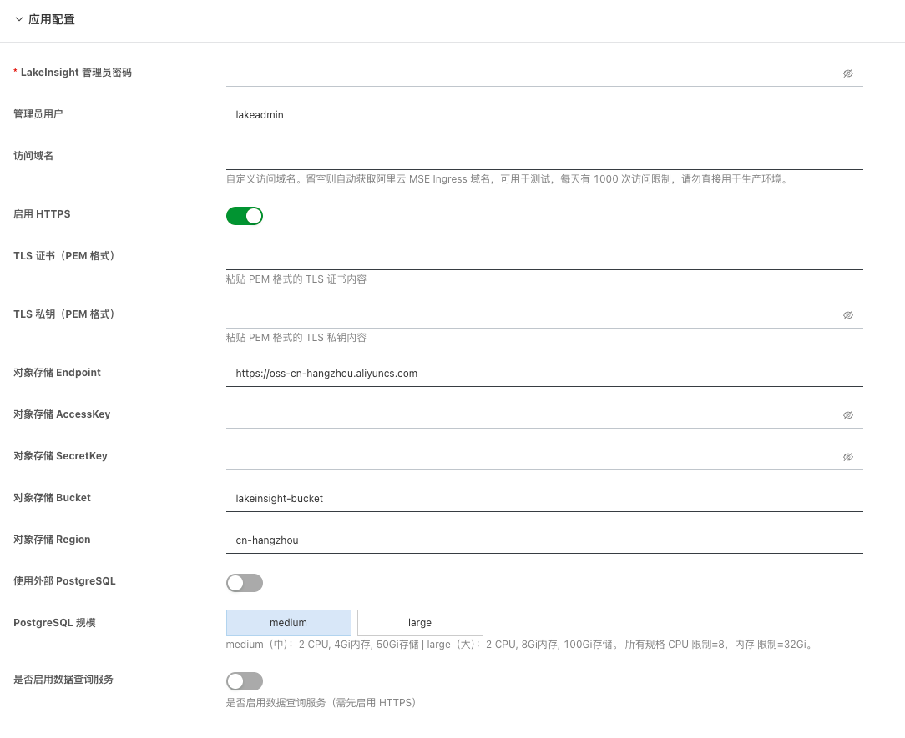
不使用外部 PostgreSQL
当"使用外部 PostgreSQL"选择"否"时，系统将自动部署内置 PostgreSQL 集群。资源规格由 PostgreSQL 规模 参数决定：
| 配置项 | medium | large |
|---|---|---|
| 镜像版本 | PostgreSQL 14.15（CloudNative-PG） | PostgreSQL 14.15（CloudNative-PG） |
| 副本数 | 2 | 3 |
| CPU requests | 2 核 | 2 核 |
| CPU limits | 8 核 | 8 核 |
| 内存 requests | 4 Gi | 8 Gi |
| 内存 limits | 32 Gi | 32 Gi |
| 数据存储（storage） | 50 Gi | 100 Gi |
默认 StorageClass:
csi-disk-topology。
使用外部 PostgreSQL
当"使用外部 PostgreSQL"选择"是"时，需在上方应用配置表中填写外部 PostgreSQL 的连接信息。填写示例如下：
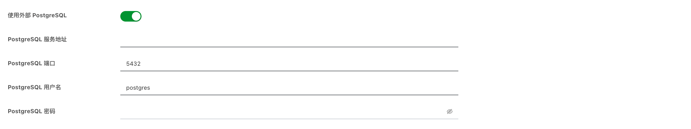
验证结果
部署完成后，通过以下步骤验证服务是否正常运行：
-
查看服务实例：在左侧导航栏进入"服务实例管理"，确认服务实例状态为"已部署"。部署过程大约需要 10 分钟。
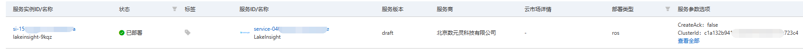
-
获取访问信息：点击"详情"进入服务实例详情页，可查看部署状态与基础信息。
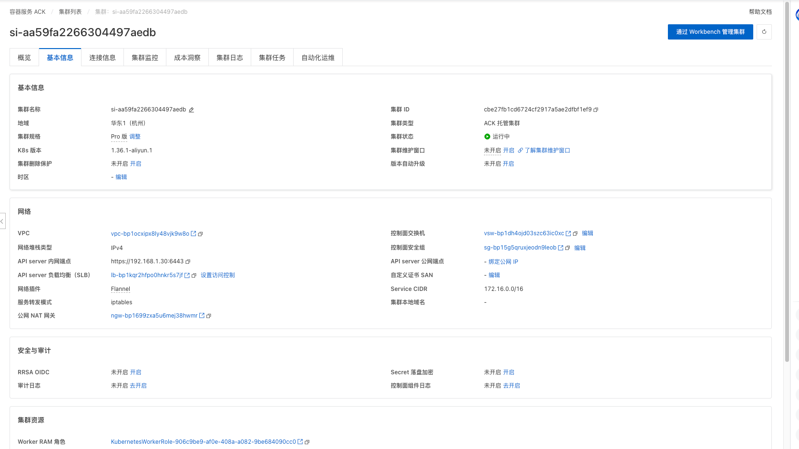
访问域名需前往 MSE 云原生网关控制台 查看，在网关列表中可获取访问域名、路由配置等信息。
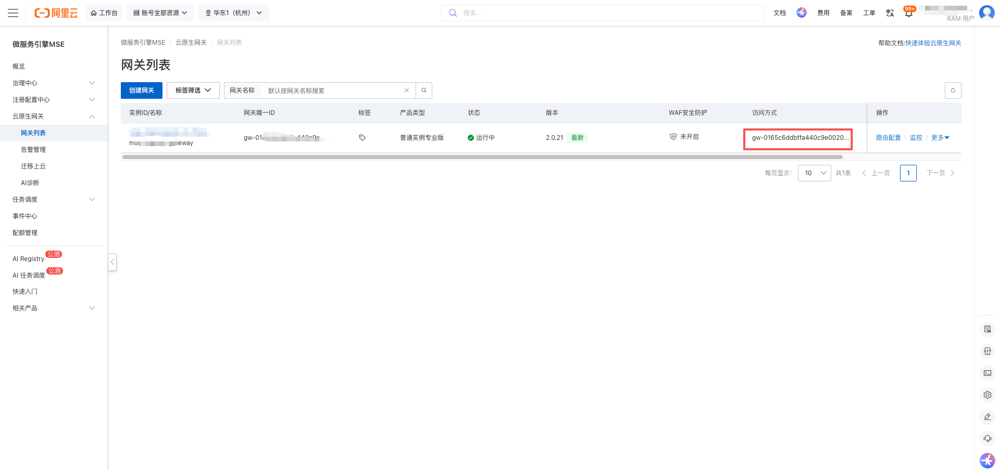
进入 Workbench 集群管理界面，通过
kubectl -n lakeinsight get pod查看各组件 Pod 状态，确认所有 Pod 状态均为Running。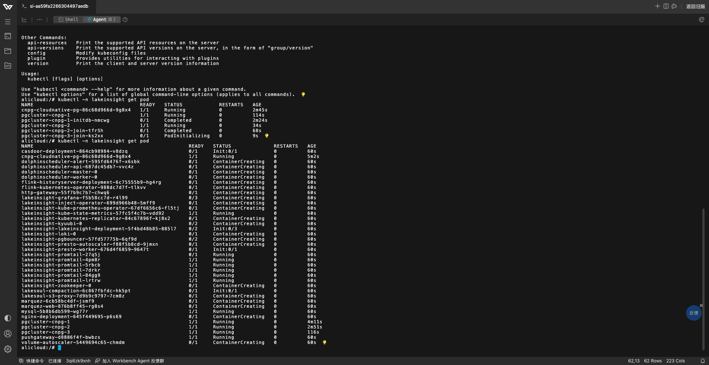
-
访问 LakeInsight：
- 正式环境：若指定了自定义域名，需将 MSE Ingress 域名解析到对应的 IP 地址后方可通过域名访问。
- 测试环境：可直接使用 MSE 提供的测试域名访问，在浏览器中忽略安全证书提示即可。
-
注册用户：首次访问
<域名>/casdoor进入 Casdoor 用户中心（身份认证服务）。使用管理员账号admin和部署时设置的 LakeInsight 管理员密码 登录 Casdoor，进入用户管理页面创建lakeadmin用户。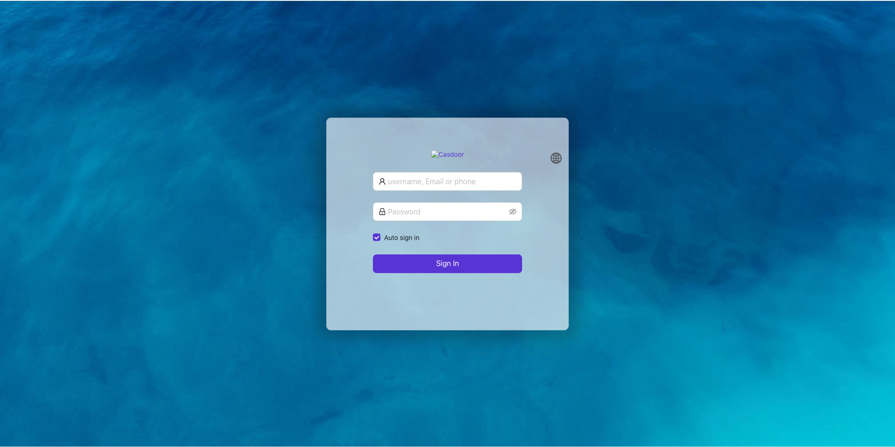
-
登录 LakeInsight：创建完成后，使用
lakeadmin用户登录 LakeInsight 主界面（访问<域名>），即可进入主页开始提交和运行任务。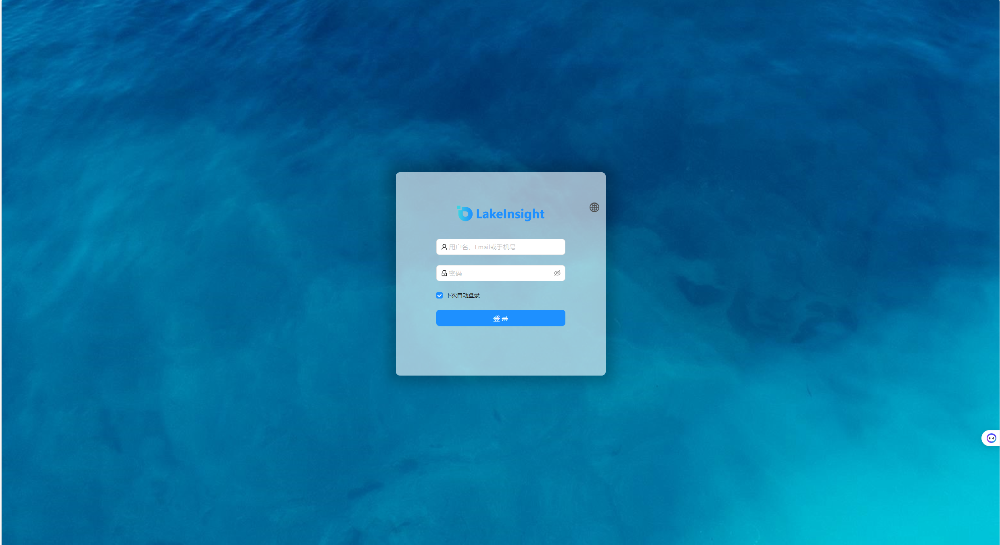
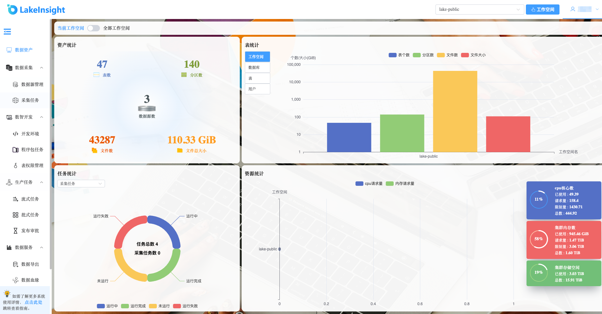
问题排查
请将问题反馈至public-contact@dmetasoul.com，我们将为您排查解答。
联系我们
欢迎访问数元灵官网了解更多信息。
联系邮箱：public-contact@dmetasoul.com
社区版开源地址：https://github.com/lakesoul-io/LakeSoul
扫码关注微信公众号，技术博客、活动通知不容错过：